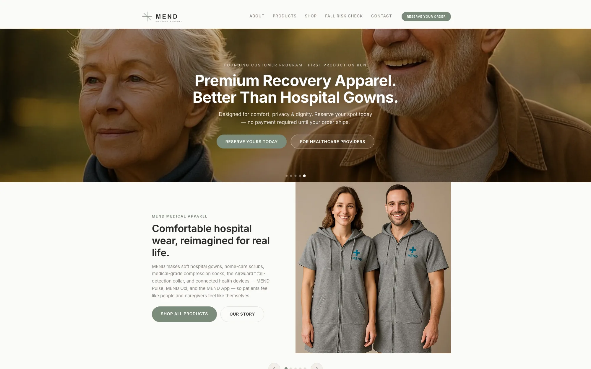

MEND Medical Wear
Founder, Architect & Developer · 2026 – Present
An ecommerce storefront for recovery apparel and connected care — washable hospital gowns, residential nurse scrubs, compression socks, and the AirGuard™ fall-detection collar.

The storefront as it stands. The hero deliberately photographs patients rather than products — the category’s convention is a flat-lay of fabric, which sells nothing to somebody about to spend a week in one. Everything below the fold is hand-written static HTML.
Live mendmedicalwear.com
Discovery
I started with the category rather than the product. Every competitor photographs folded fabric on white; nobody photographs the person wearing it, which sells nothing to somebody facing a week in hospital. That audit set three things: the positioning, the two buyer segments — patients and the people caring for them — and the decision to lead acquisition with a free fall-risk assessment instead of a discount code.
Architecture
Static-first, deliberately. Hand-written HTML, CSS, and JavaScript on Vercel, with no bundler and no framework for the storefront proper. A catalogue this size does not need a build step, and skipping one buys near-instant loads and a site that will still build in five years without a dependency archaeology dig. The one genuinely interactive tool runs on hand-written React shims so it could not drag a toolchain onto everything else.
Design
Brand identity, palette, and typography, then the photographic direction — patients and caregivers in real light rather than product flat-lays — and a product-page template that had to carry seven very different SKUs, from a cotton gown to a wearable sensor.
Development
Every line is mine: the storefront, seven product detail pages, and the React fall-risk assessment that scores against WHO fall data with charts and a regional model.
Integrations & APIs
The assessment posts to a serverless lead-capture endpoint. Alongside it, a full technical SEO program — www unification, clean product slugs, an image pipeline, security headers, sitemap and robots.
Delivered
- Brand positioning, identity, and photographic direction from scratch
- Seven product detail pages — gowns, scrubs, compression socks, the AirGuard™ collar, MEND Pulse, MEND Oxi, and the MEND app
- React fall-risk assessment built on WHO fall data, wired to a serverless lead-capture endpoint
- Technical SEO program and a static-first architecture with no framework lock-in